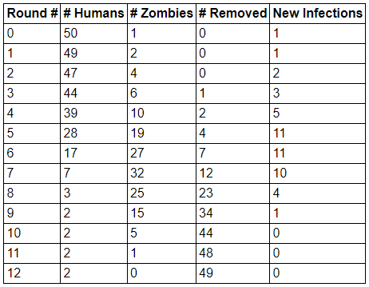
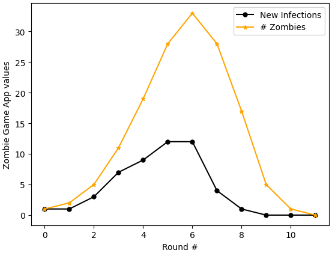

Chapter9* Preparing Influenza Data to Compare With a Model
***This chapter is under construction.***
Goals
Distinguish between the vocabulary terms incidence and prevalence when describing categories of infectious cases in an outbreak
Translate the numbers in a typical data set from an outbreak into a related set of numbers that we can compare with the output of a model
Build skills for working with numbers and formulas in a spreadsheet
At this point, we have studied compartmental models, mathematical analysis of models, and multiple variations to those models. You can now develop models for many different kinds of infectious disease outbreak and for a variety of public health interventions that can be used to stop, slow, or reduce the size of the outbreak.
Next, we begin a three-chapter foray into comparing models with data. In this chapter, we start with a typical data set that shows how many new cases occur per day (or per week, month, or other time period), and we restructure those numbers into a set of numbers that more meaningfully compares with the models we write. Chapter 10 introduces Python code for fitting a model to a data set, adjusting parameters within the model to improve the fit. Then, in Chapter 11, we compare multiple models for the same outbreak.
Begin in Exploration 9.1 by investigating data sets generated by the Zombie Game App. We will use different columns of data from this app to help us think about how typical real-world disease data sets can compare with the kinds of compartmental models we have been studying.
Exploration9.1.Comparing Data: New Zombies vs. All Current Zombies.
We return to the Zombie Game App, using the Zombie Mortality feature in a similar way to what we first saw in Exploration 4.1. This time, our goal is to distinguish between the data for # Zombies and the data for New Infections.
(a)
The data table below comes from the Zombie Game App. This table results from a simulation in which zombies are designated as mortal, with a “lifespan” (if zombies can be said to have a lifespan) of two days. Once a zombie surpasses its lifespan, it moves to the Removed category, meaning it no longer appears on the hex grid and can no longer infect humans.

Figure9.1.Table of sample data from a human–zombie simulation in which zombies have a two-day lifespan
On paper or in a spreadsheet: create a plot with Round # on the horizontal axis and # Zombies on the vertical axis. Separately, create a plot with Round # on the horizontal axis and New Infections on the vertical axis.
Make at least three observations, comparing and contrasting the two plots you have made.
to generate your own data. Within the app, check the box labeled Zombie Mortality, located under the heading Other Options. Once you do so, you can select the Zombie Lifespan (days). Then run the game and make note of your resulting data table. Again, graph the data for # Zombies and for New Infections, as you did in part (a).
Which of your observations from part (a) remain true? If any change, which observations change, and in what ways do they change?
in part (b), you may also choose to change the default Human Start Count to make it more likely for Humans to win the game. Write out at least three different combinations of Zombie Lifespan (days) and Human Start Count that you used and found that Humans won the game.
Next, investigate the question: when keeping Zombie Lifespan (days) the same, does increasing or decreasing the Human Start Count make it more likely for Humans to win? Support your response using evidence you generate from the Zombie Game App.
What mathematical epidemiology quantity that we have studied provides insight into answering the question in the previous paragraph?
Section9.1Incidence and Prevalence
When studying mathematical epidemiology, it helps to distinguish between the epidemiological terms incidence and prevalence. Incidence is a measure of new cases within a specified time unit, such as new cases per day or new cases per week. Prevalence is the total number of active cases at a given time, which means that prevalence includes both new cases and already-existing cases. Activity 9.2 provides practice with these terms, as they relate to data from the Zombie Game App and to solution curves from SIR models.
Activity9.2.
Below is a graph created from a data set generated by the Zombie Game App. This data set was created using the same settings as the data in Figure 9.1, that is, zombies are mortal and have a two-day “lifespan”. The specific data values here are different than those in Figure 9.1.

Figure9.2.Graph of New Infections vs. Round Number, and Number of Zombies vs. Round Number, created using data from a Zombie Game App simulation in which zombies have a two-day lifespan
Spend some time thinking about the graph in Figure 9.2 while also thinking about your work in Exploration 9.1. Then respond to the following prompts.
First, simply list observations you had while comparing Figure 9.2 with what you did in Exploration 9.1. List at least three observations.
Next, read carefully the descriptions for incidence and prevalence at the start of Section 9.1. Which of the curves in Figure 9.2 seems to you to better represent incidence? And which curve seems to better represent prevalence? Explain your reasoning.
Now compare Figure 9.2 with graphs you have seen for SIR models, when we plot solution curves for \(S(t)\text{,}\)\(I(t)\text{,}\) and \(R(t)\text{.}\) Which of the data plots in Figure 9.2 -- the New Infections plot, or the # Zombies plot -- seems better for comparing with the \(I(t)\) curve we would generate in an SIR model of an outbreak?
Answer.
There can be many kinds of observations. Be thoughtful; be creative; think broadly.
The New Infections curve tells us the number of new cases per round, and this closely mirrors the wording in the definition of incidence. The # Zombies curve tells us the total number of active zombies per round, and this wording is very similar to wording in the definition of prevalence.
The \(I(t)\) curve often describes all active infections at a given time \(t\text{.}\) This compares best with the data for # Zombies vs. time. (This is not a perfect comparison for every outbreak, as sometimes \(I(t)\) means a person is contagious but does not yet show symptoms. However, in the basic zombie game, where is a person is contagious exactly when they are a zombie, the \(I(t)\) curve is well matched with data for # Zombies.)
It turns out that outbreak data typically take a format similar to the numbers shown in the New Infections column of data in the Zombie Game App. These numbers may be shared as a table of values, or in a graphical format, such as a histogram. In order to compare the number of new cases in an outbreak with the \(I(t)\) curve in an SIR model (or other compartmental model), we need to use what we know about the outbreak to convert the numbers of new cases into the number of people in the I compartment at each time step of the outbreak. This is our goal in Section 9.2.
Section9.2Translating a Typical Data Set Into Numbers We Can Compare With a Model
In the fall of 2009, Bates College experienced an outbreak of H1N1 influenza. The initiating event appeared to be Parents’ and Families’ Weekend, a time when relatives of students were all invited to campus for a weekend of events together. Shortly thereafter, the first confirmed cases of H1N1 appeared on campus. There were multiple initial infections, due to several students independently becoming infected after visitors came to campus.
Before the fall 2009 semester, college officials at Bates and elsewhere had been preparing for the newly emerged H1N1 influenza virus. While the specific influenza viruses that circulate each year differ somewhat from those that circulated in previous years, the 2009 H1N1 virus had distinct genetic differences from any influenza viruses that had ever been studied in humans. The World Health Organization 3
describe more about the differences on their websites. The novelty of the fall 2009 H1N1 virus led to heightened concern about large outbreaks and possible effects on people of all ages.
In Activity 9.3 we work with real data collected during the Bates outbreak. Starting with this data set, which is shown in Table 9.3, we think through how to convert data into numbers we can compare with an SIR model for the spread of H1N1 influenza.
Activity9.3.
After the 2009 outbreak of H1N1 influenza virus on the Bates College campus, the Dean of Students and Student Health Services were kind enough to share their data on new infections among students. As is common with data sets for an outbreak: information that could identify specific individuals has been removed, and the data set takes the form of new case reports. The data set appears in Table 9.3.
Table9.3.Student case reports of H1N1 in fall 2009 at Bates College
Day of Week
Date
New Cases Reported
Tuesday
October 6
5
Wednesday
October 7
8
Thursday
October 8
2
Friday
October 9
6
Saturday
October 10
6
Sunday
October 11
15
Monday
October 12
28
Tuesday
October 13
53
Wednesday
October 14
44
Thursday
October 15
20
Friday
October 16
12
Saturday
October 17
9
Sunday
October 18
17
Monday
October 19
21
Tuesday
October 20
7
Influenza moves quickly. The incubation period is short, often just two days or even shorter, and people can become contagious before showing symptoms. 5
Two articles to support this are “2009 H1N1 Influenza” by Seth J. Sullivan, Robert M. Jacobson, Walter R. Dowdle, and Gregory A. Poland, published January 2010 in the Mayo Clinic Proceedings, and “Outbreak of 2009 pandemic influenza A (H1N1) at a New York City school” by Justin Lessler, Nicholas G. Reich, and Derek A. T. Cummings, published in 2009 in the New England Journal of Medicine.
For this reason, we use an SIR model instead of an SEIR model. There are multiple estimates how long people remain contagious, with five days as a commonly provided number, though for some people the contagious period may be a little shorter or a few days longer. 6
The European Centre for Disease Prevention and Control includes the estimate of five days for adults and seven days for children on their web page “Questions and answers on the pandemic (H1N1) 2009”, last accessed 16 September 2024, available at https://www.ecdc.europa.eu/en/seasonal-influenza/2009-influenza-h1n1-faq.
Given this information about the incubation period and contagious period of H1N1, follow the steps below to convert the incidence data in Table 9.3 to prevalence numbers that can be compared with the I compartments of an SIR model students at Bates College in fall 2009.